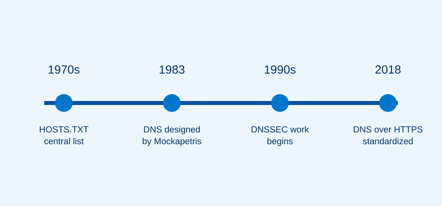

The Early Internet Naming Problem
Before DNS, Internet hosts were identified through a centrally maintained file called HOSTS.TXT. Each participating computer needed an updated copy of the file. This method worked while the network was small, but it became difficult to maintain as the number of connected systems increased.
A centralized file created delays, duplication, and a growing risk of name conflicts. The Internet needed a distributed system that could divide responsibility among many organizations.

The Creation of DNS
Paul Mockapetris designed the Domain Name System in 1983. The system introduced a hierarchy that begins with the root, continues through top-level domains such as .com and .org, and ends with domains managed by individual organizations.
RFC 1034 and RFC 1035, published in 1987, documented the core concepts, message formats, and implementation rules that continue to influence DNS today. The distributed design made the system scalable because no single server had to store every domain name.
Security and Privacy Developments
Traditional DNS was designed primarily for availability and performance, not strong authentication or privacy. DNSSEC adds digital signatures that help resolvers verify that DNS records have not been altered. DNS over HTTPS sends DNS queries through encrypted HTTPS connections, reducing the ability of outside observers to view or modify those requests while they travel across a network.